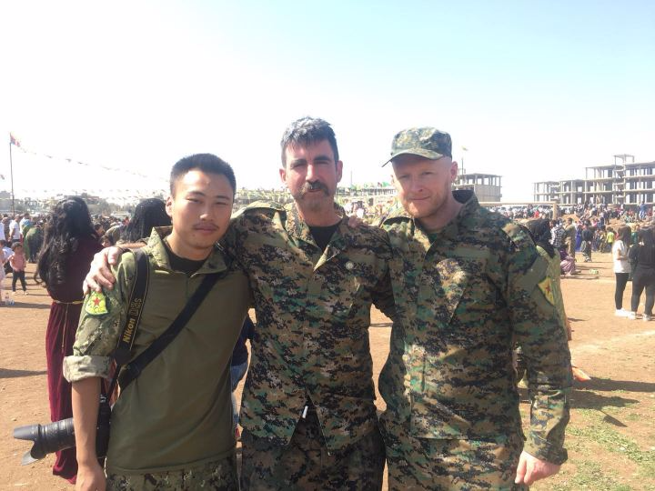

故事
这一次推荐一篇以华尔街日报体写作的报道「摆脱乐视，走出至暗时刻」，和两篇关于叙利亚、库尔德、国际主义战士的报道。另附两篇数据行业入门指路手册型的好文章。
张昭：挣脱乐视，走出至暗时刻
乐视网高管张昭在关键时刻的挣扎抉择。
Javalover93:
写得太精彩了，比小说还好看！

黄磊独家访谈录：罗贾瓦国际主义战士的证言
92年生于四川的英国籍华人黄磊，在 2015 年开始就一直战斗在叙利亚。这是他直接从前线传递回来的材料。时隔3个多月重看此文，仍然令人陷入深思。我个人十分好奇，国内的军事专家如何研究这些事情。今日重看才发现文章最末尾有给黄磊筹集返英机票钱的链接。我在谷歌没有找到黄磊是否成功返回英国的消息。
原文摘录：
- 编者按：黄磊（化名Sipan Kawa）是2015年迄今一直战斗在罗贾瓦的唯一一名华人国际主义战士，几乎历经了科巴尼保卫战之后人民保卫军的所有主要战斗。近期，我们有幸联系并采访到了黄磊。通过这次采访，我们不仅对他个人的经历有了更为详尽的了解，而且也获得了大量有关罗贾瓦革命、人民保卫军的生动信息。尤其是不久前刚刚结束的阿夫林保卫战，透过黄磊的讲述，我们得以了解人民保卫军落败的个中缘由。我们相信，黄磊作为战争与革命亲历者提供的这些内容，一定能够为我们的读者提供有价值的教益。因此，我们将这次访谈的内容加以整理，发表如下，以飨读者。需要说明的是，访谈中有些内容是黄磊在阿夫林战况紧急时，借助因土军破坏而速度极其糟糕的网络，向我们传递出来的。就此，我们向Heval黄磊致以崇高的敬意。
- 我来罗贾瓦有两个原因。一个是因为虽然长大在英国，但我是华人，仍然有爱国心，希望打击xx恐怖分子…… 另一方面也是过来寻求革命，希望像一些前辈那样，真正做一番事业。我想实现自己的愿望，经历革命，看看我学的这些东西是否真的实用。看看我过来是真要参加革命，还是玩耍。我想了解自己的内心。所以我不是想留名青史，我不想那样。我只是实现自己的愿望，就算过来直接挂了也不要紧。
- 我是自己看我爷爷的书和他的日记，还有一些老红军那一辈的手册之类。看着看着，慢慢就有了兴趣。再加上后来学的国际政治，就成了马克思列宁主义者。
从西班牙到叙利亚，79年后国际纵队的重建
Javalover93:
本文倾向性明显，但又何妨。相对于 79 年前举世关注的国际纵队，这一批人更像是游荡的xx主义灵魂。题图是2017年8月14日不幸阵亡的IFB指挥官亚美尼亚老革命 Nubar Ozanyan，一个坚定的毛主义者。
原文摘录：
- IFB国际自由营主要由外籍左翼人群组成，下辖多个不同派别，人员信仰五花八门：马列宁主义，霍查主义，毛泽东思想，无政府主义，托洛茨基主义，以及同性恋解放等等… …
听说你立志要做数据分析，不如先听听老司机的建议？
点击标题阅读原文。
Javalover93:
结构比较松散，但是面面俱到。还提供了 1 ～ 10 年不同阶段的建议。
从零开始学数据分析，什么程度可以找工作？
点击标题阅读原文。
Javalover93:
简单说：教你如何通过自学找到合适的数据分析工作。
原文摘录：
- 首先需要深入了解各类公司对数据分析岗位的实际需求，判断自己感兴趣的岗位所需要的「最小技能树」，然后选择适合自己的学习方式和路径，是从零开始快速入行的首选方法。